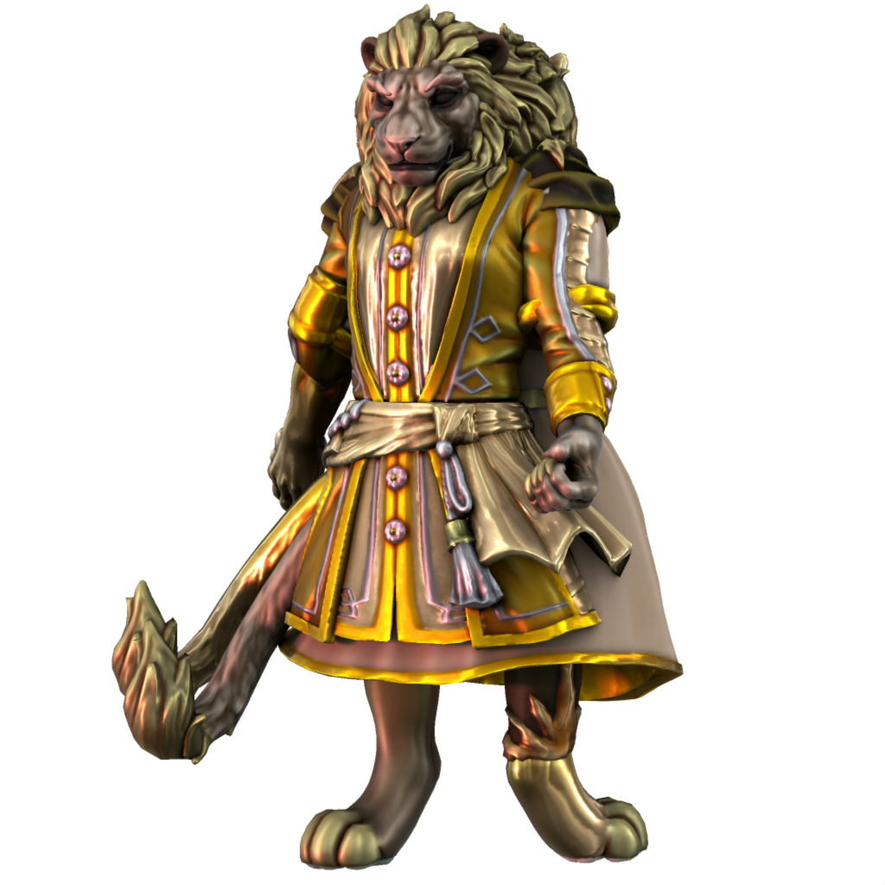

Ianoa

Malefix of pride
Ianoa embodies the bad aspects of pride; boastfulness, derision, arrogance.
The Two Faced God
Ianoa is irrevocably joined to his inverse, Aonai, who embodies the positive aspects of pride. When in the material realm, the two appear as conjoined, each controlling one arm, one leg, and one tail.
🡐 Malefices